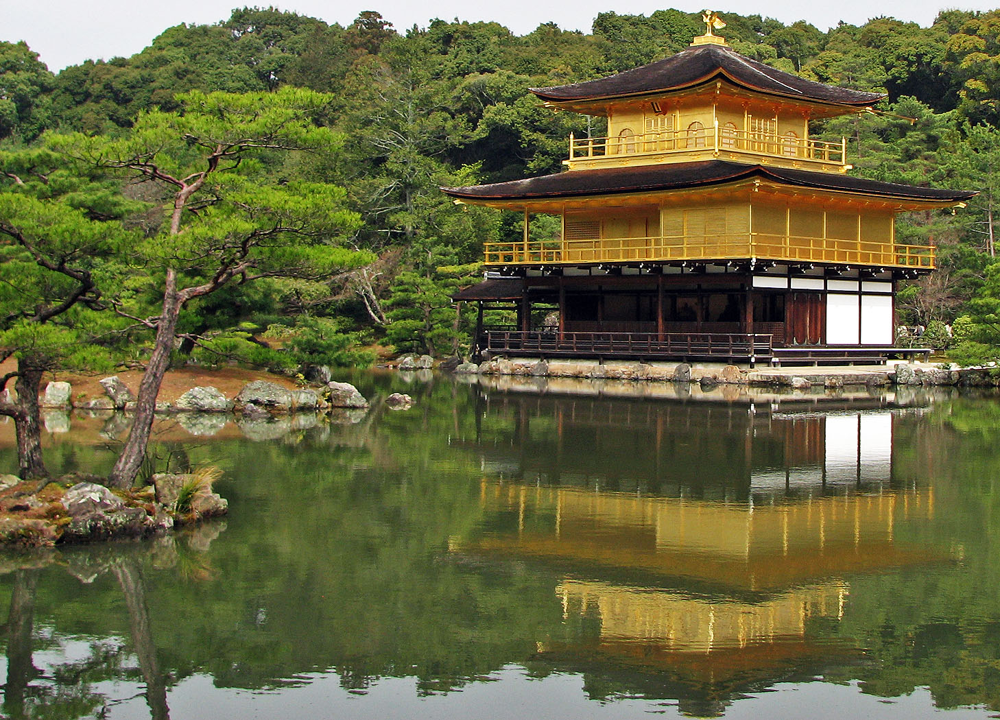
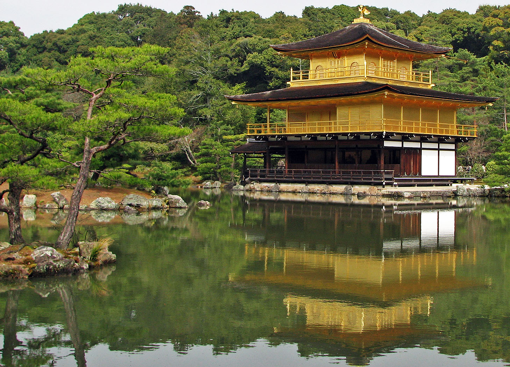
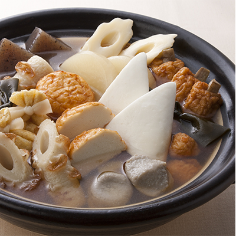
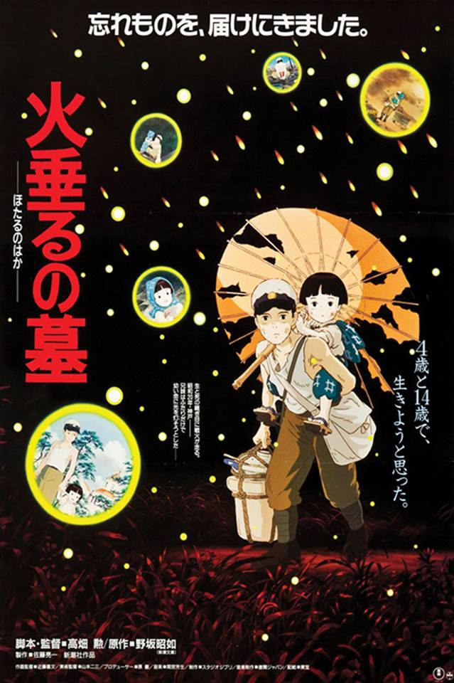
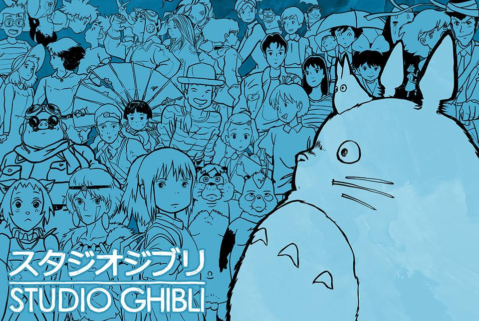

Here is Q1
Here is A1
これは なん です か。

とうきょう タワー です。
これは なん です か。


きんかくじ です。
これは なん です か。

ふじ です。
これはなんですか。
親子丼（おやこどん）です。

どの きせつ に にほんじん はおでん を たべますか。
ふゆです。

もののけひめと せんとちひろのかみかくし と どちら のほうが ゆうめいですか。
せんとちひろのかみかくし のほうが ゆうめいです。

だれが ほたるのはか を つくりましたか。
イサオたかはたです。

スタジオジブリ は とても じゅうようです。スタジオジブリ は なんさいですか。
さんじゅうにさいです。